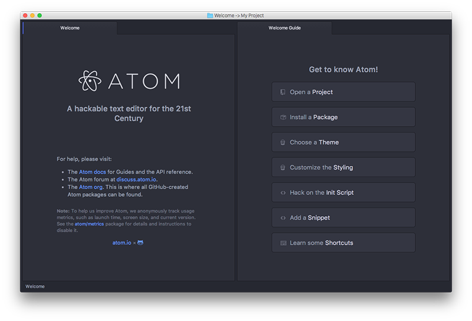
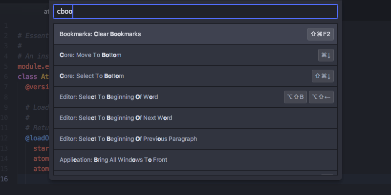
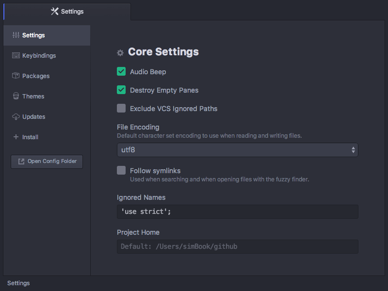
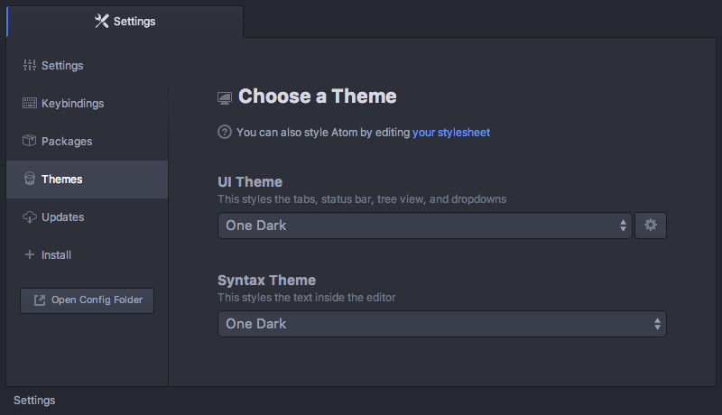
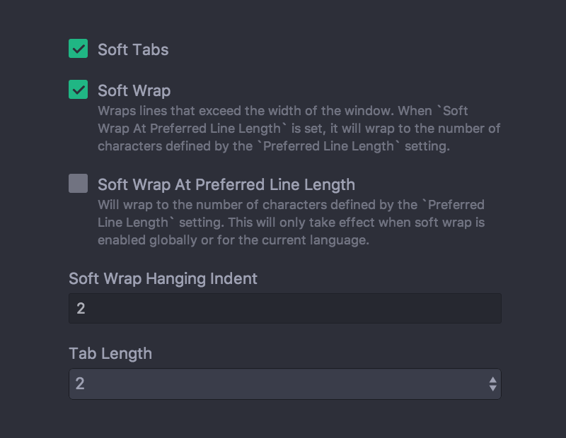
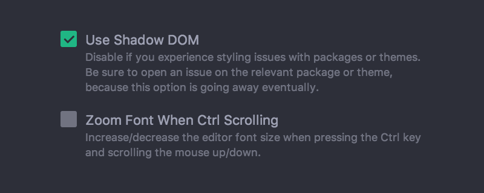
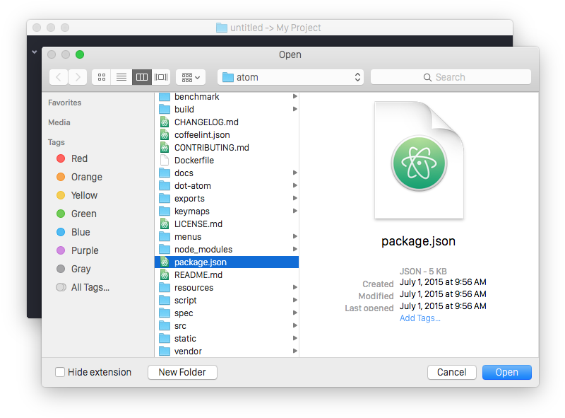
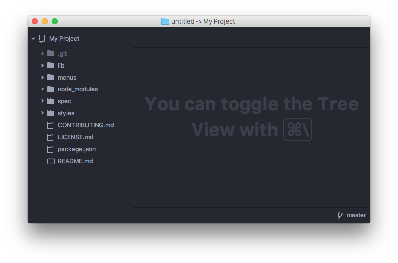
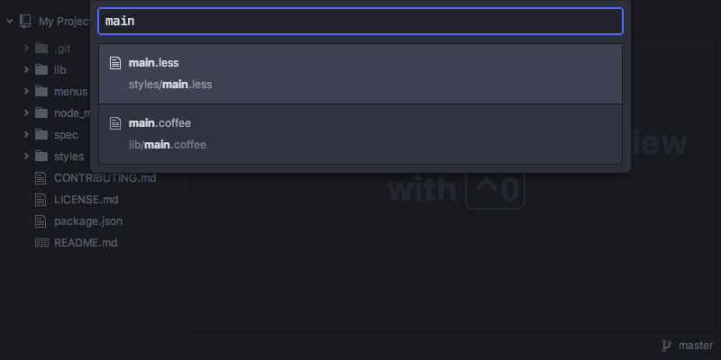

Atom 基础
当你安装好了 Atom 之后，让我们来认识一下它吧。
当你第一次打开 Atom 的时候，你会看到这样的一个窗口：

图 1. Atom 的欢迎屏幕
这是 Atom 的欢迎屏幕（welcome screen），它展示了一些不错的建议，帮助你了解 Atom.
基本术语
让我们先来了解一下接下来要用到的几个术语：
缓冲区（Buffer） 代表了 Atom 中的一个文件的文本内容，它基本上相当于一个真正的文件，但它是被 Atom 维护在内存中的，如果你修改了它，在你保存之前，缓冲区的内容都不会被写入到硬盘里。
窗格（Pane） 代表 Atom 中的一个可见区域。例如在欢迎屏幕上你可以看到四个窗格：用来切换文件的标签栏（tab bar），用来显示行号的边框（gutter），底部的状态栏（status bar），以及文本编辑器。
命令面板
当你按下 cmd-shift-P 并且当前焦点在一个窗格上的时候，命令面板就会弹出来。
在这个教程中我们会用类似 cmd-shift-P 的形式来运行命令，这是 Atom 在 Mac 上的默认快捷键，如果你在其他的平台上使用 Atom, 可能会稍有不同。如果某个快捷键无法工作，你可以通过命令面板来查找正确的快捷键。
在 Atom 中几乎所有的操作都通过这种搜索驱动的菜单来完成，你只需要按下 cmd-shift-P 来搜索命令，而不必在复杂的传统菜单栏间点来点去。

图 2. 命令面板
除了搜索数以千计的命令之外，命令面板上会显示每个命令对应的快捷键，这意味着你可以在使用这些命令的同时学习对应的快捷键，以便之后使用。
在本书的剩余部分我们会向你介绍一些命令，你可以在命令面板中搜索，或使用对应的快捷键。
偏好设置
Atom 有很多选项和偏好设置，你可以在设置界面修改它们。

图 3. Atom 的设置界面
在设置界面中，你可以修改主题、修改文本折行的行为（wrapping）、字体大小、缩进宽度、滚动速度等选项。你也可以用这个界面安装新的插件和主题，我们在 Atom Packages 中介绍了这个话题。
你可以通过菜单栏中 Atom 下的 Preferences 菜单项打开设置界面。你也可以在命令面板中搜索 settings-view:open 或使用快捷键 cmd-,.
修改主题
你可以在设置界面中修改 Atom 的主题，Atom 内建了 4 个不同的 UI 主题，分别是亮色和暗色版本的名为 Atom 和 One 的主题。以及 8 个不同的语法着色主题。你可以通过点击左边栏的 Themes 选项卡来改变当前主题，或安装新的主题。

图 4. 从设置里更改主题
UI 主题会修改标签栏、左侧目录树（tree view）等 UI 元素的颜色；而语法着色主题修改编辑器中文字的语法高亮方案。你只需要简单地在下拉框中选择另一项，即可修改主题。
在 Atom.io 上有数十种主题供你选择，如果你想要一个独一无二的主题，我们也在 Basic Customization 中介绍了如何自定义主题，还在 Creating a Theme 中介绍了如何创建一个主题。
文本折行
你可以通过设置界面指定 Atom 处理空白和折行的策略。

图 5. 从设置里更改广本折行
当你启用了 Soft Tabs, Atom 将会在你按 tab 键时用空格来替代真正的制表符，Tab Length 则指定了一个制表符代表多少个空格，或者当 Soft Tabs 被禁用时多少个空格相当于一个制表符。
如果开启了 Soft Wrap 选项，Atom 会在一行中的文本超出屏幕显示范围时将其折为两行，如果禁用了这个选项，过长的行将简单地超出屏幕显示范围，你必须要横向移动滚动条才能看到剩余的部分。如果 Soft Wrap At Preferred Line Length 选项被开启，则总是会在 80 个字符处折行，你也可以设置一个自定义的长度来替换掉默认的 80 个字符。
在 Basic Customization 中我们会介绍如何为不同的文件类型（例如你希望在 Markdown 文件中折行，但不希望在代码中也是如此）设置不同的折行配置。
测试功能（Beta Features）
在 Atom 的开发过程中，偶尔会有一些新功能，但没有默认启用给所有用户。如果你愿意的话，你可以在设置界面中提前体验这些功能。

图 6. 设置界面里的测试功能
这对于插件开发者来说非常有用，开发者可以在一个功能被默认启用之前，测试他们维护的插件与新功能的兼容性。
你也可能仅仅是因为期待即将到来的新功能，所以时不时来这里看一看。
打开、编辑、保存文件
现在我们已经设置好了编辑器，让我们来了解一下如何打开和编辑文件吧，毕竟这才是一个文本编辑器真正的功能。
打开文件
在 Atom 中有几种方式可以打开一个文件。你可以在菜单栏中点击 File 菜单下的 Open, 或者用快捷键 cmd-O, 用操作系统的对话框选择一个文件。

图 7. 从文件选择对话框打开文件
这在打开一个不属于当前项目的文件非常有用，或者更可能是你刚打开一个新的窗口。
另一种打开文件的方法是用命令行。在 Atom 的菜单栏中有一个名为 Install Shell Commands 的菜单项，他会向你的终端中安装一个新的名为 atom 的命令，你可以用一个或多个文件路径作为参数去运行 atom 命令。
$ atom -h
Atom Editor v0.152.0
Usage: atom [options] [path ...]
One or more paths to files or folders may be specified. If there is an
existing Atom window that contains all of the given folders, the paths
will be opened in that window. Otherwise, they will be opened in a new
window.
...
这对于从终端中打开一个文件来说非常有用，只需运行 atom [files] 即可。
编辑和保存文件
你可以非常简单地编辑一个文件，你只需要用你的鼠标点击一个位置，然后用键盘输入内容即可，Atom 没有特殊的命令或快捷键来进入「编辑模式」。
你可以用菜单栏的 File >> Save 或快捷键 cmd-S 来保存文件，或者你可以用 Save As 或 cmd-shift-S 将文件另存为到另一个路径。最后，你可以用 ctl-shift-S 快捷键一次保存 Atom 中所有打开的文件。
打开目录
Atom 不仅仅可以编辑单个文件；大多数情况下你需要编辑由若干个文件组成的项目（Project）。你可以在菜单栏 File >> Open 弹出的对话框中选择一个目录，或者你也可以通过 File >> Add Project Folder… 或快捷键 cmd-shift-O 在一个窗口中打开多个目录。
你也可以在命令行下，将多个路径作为参数传递给 atom. 例如 atom ./hopes ./dreams 会让 Atom 同时打开 hopes 和 dreams 这两个目录。
当你用 Atom 打开一个或多个目录时，目录树会自动地出现在窗口左侧。

图 8. 已打开项目的目录树
目录树允许你查看和修改当前项目的目录结构，你可以在目录树中打开文件、重命名文件、删除文件、创建文件。
你可以通过快捷键 cmd-\ 或 tree-view:toggle 命令来隐藏或重新显示目录树，用快捷键 ctrl-0 可以将焦点切换到目录树。当焦点位于目录树上时，你可以用快捷键 a、m 以及 delete 来创建、移动或删除文件和目录。你还可以简单地在目录树中用右键点击文件，你可以看到更多选项，除了前面提到的，还可以在操作系统的文件浏览器中显示文件、复制文件的路径到剪贴板。
打开项目中的文件
当你在 Atom 中打开了一个项目（即目录）后，你就可以简单地查找并打开来自项目中文件了。
当你按下 cmd-T 或 cmd-P 的时候，模糊查找框（Fuzzy Finder）就会弹出。它允许你通过输入文件名或路径的一部分，在整个项目中模糊查找相应的文件。

图 9. 使用模糊查找框打开文件
你也可以通过 cmd-B 来只查找已经打开的文件，而不是所有文件。你还可以用 cmd-shift-B 来只查找从上次 Git 提交之后修改过或新增的文件。
模糊查找框会根据 core.ignoredNames 和 fuzzy-finder.ignoredNames 这两个选项来决定不查找哪些文件。如果在你的项目里有很多你不希望它们出现在模糊查找框的文件，那么你可以在选项中添加它们的路径或使用通配符。你可以在设置界面的 Core Settings 下找到这两个选项，之后我们会在 Basic Customization 一节中介绍更多的选项。
这些选项的通配符功能由名为 minimatch 的一个 Node.js 库提供，你可以在这里了解到它的语法：https://github.com/isaacs/minimatch
在 core.excludeVcsIgnoredPaths 这个选项被开启时，模糊查找框会忽略 .gitignore 中指定的的文件，你可以在设置界面中修改这些选项。
模块化的 Atom
就像 Atom 的其他很多部分一样，目录树也并非直接内建在 Atom 中，它是一个独立的插件，被捆绑在 Atom 发行版中并默认启用。
你可以在这里找到目录树插件的源代码：https://github.com/atom/tree-view
Atom 有趣的部分之一就是，很多核心功能实际上只是一个普通的插件——你也可以用类似的方式来实现其他功能。这意味着如果你不喜欢默认的目录树，你完全可以简单地自己编写一个，然后将默认的目录树替换掉。